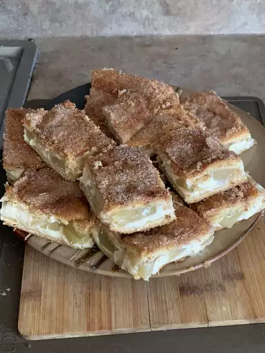

Cream Cheese Squares

Cream Cheese Squares
Part breakfast, part dessert, and all deliciousness. They're like a cinnamon roll that actually has enough icing.
Ingredients:
- 2 (8 ounce) cans refrigerated crescent roll dough
- 2 (8 ounce) packages cream cheese, softened
- 1 1/4 cups white sugar, divided
- 1 teaspoon vanilla extract
- 1/2 margarine, melted
- 1 teaspoon ground cinnamon